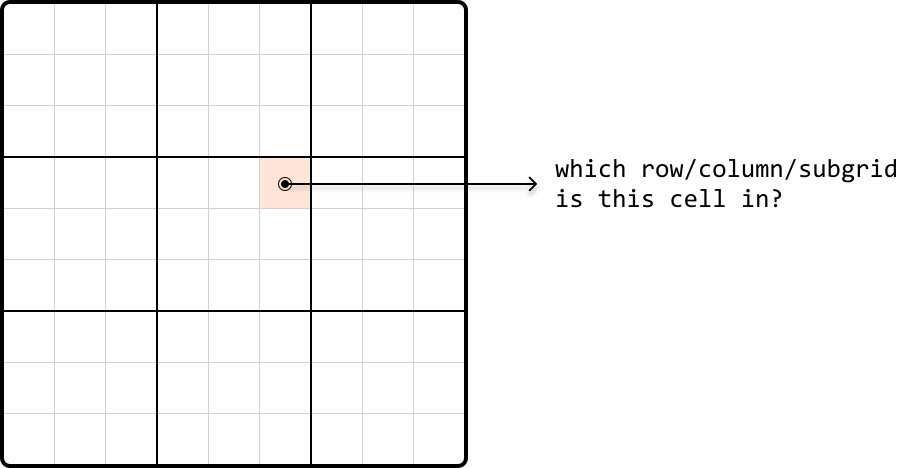

Verify Sudoku Board
MediumGiven a partially completed 9×9 Sudoku board, determine if the current state of the board adheres to the rules of the game:
-
Each row and column must contain unique numbers between 1 and 9, or be empty (represented as 0).
-
Each of the nine 3×3 subgrids that compose the grid must contain unique numbers between 1 and 9, or be empty.
Note: You are asked to determine whether the current state of the board is valid given these rules, not whether the board is solvable.
Example:
![Image represents a partially filled Sudoku grid with a highlighted 3x3 subgrid in light pink. The grid contains various numbers (1-9) arranged in rows and columns. Two curved arrows originate from within the pink subgrid, specifically from the numbers '2' and '8' located in the same row and column respectively. These arrows point to a light gray rectangular box containing the text 'two 2s in the same row' stacked above 'two 8s in the same column'. A further arrow extends from this gray box to the right, pointing to the text 'return False', indicating that the presence of two '2's in the same row and two '8's in the same column violates Sudoku rules, resulting in a 'False' return value. The overall diagram illustrates a pattern recognition process within a Sudoku solver, where the algorithm detects rule violations based on the presence of duplicate numbers within rows and columns.](images/02_02_verify-sudoku-board-img-d195eeb6.svg)
Output: False
Constraints:
- Assume each integer on the board falls in the range of
[0, 9].
Intuition
Our primary objective is to check every row, column, and each of the nine 3x3 subgrids, for any duplicate numbers. Let's first discuss the mechanism for finding duplicate elements, then look into how we can apply this to rows, columns, and subgrids.
Checking for duplicates
Let’s start by figuring out how to check for duplicates on a single row of the board:
![Image represents a visual depiction of data transformation. A 9x9 grid, resembling a partially completed Sudoku puzzle, is shown on the left. The grid contains various single-digit numbers (1-9) arranged within its cells, with some cells remaining empty. A specific row of the grid, highlighted in a light peach color, contains the numbers 1, 2, 5, 3, and 2. A rightward-pointing arrow connects this grid to a single-row, rectangular array on the right. This array contains the same numbers (1, 2, 5, 3, 2) as the highlighted row from the grid, arranged sequentially in individual cells, mirroring the order in the highlighted row. The image illustrates the extraction of a specific row of data from a two-dimensional structure (the Sudoku grid) into a one-dimensional structure (the array), effectively demonstrating a data transformation or extraction process.](images/02_02_verify-sudoku-board-img-d95a7d89.svg)
A naive way to do this is to take each number in the row and search the row to see if that number appears again. Performing a linear search for each number would result in a time complexity of O(n2) to check all numbers in one row, which is quite time consuming.
We can use a hash set to improve the time complexity. By using a hash set, we can keep track of which numbers were previously visited as we iterate through the row. When we encounter a new number, we can check if it's already in the set in O(1) time. If it is, then it's a duplicate:
![Image represents a visual depiction of data being processed to create a hashset. A downward-pointing arrow originates from a small square containing the letter 'i', suggesting input data. This arrow points to a horizontal array or list divided into cells, each containing a single integer: 1 (highlighted in peach), 2, 5, 3, and 2. To the right, a dashed-line rectangle represents a hashset, initially empty and denoted as 'hashset = {}.' The implication is that the integers from the array are being processed, and will populate the initially empty hashset. The visual suggests a step-by-step process where the numbers from the input array are added to the hashset, potentially illustrating the concept of adding elements to a set data structure.](images/02_02_verify-sudoku-board-img-593195db.svg)
![Image represents a visual depiction of a HashSet operation. A small square labeled 'i' with an 'i' inside points downwards, indicating an input or iterator. This arrow points to a horizontal array or list divided into cells, each containing a single integer: 1, 2 (highlighted in peach/light orange), 5, 3, and 2. The highlighted '2' suggests the current element being processed. To the right, a dashed-line rectangle displays the current state of a HashSet, represented as 'hashset = {1}'. This implies that the algorithm has iterated through the array, and so far, only the number '1' has been added to the HashSet, because HashSets only store unique values. The diagram illustrates a step-by-step process of populating a HashSet from an array, showing the current element under consideration and the resulting HashSet at that stage.](images/02_02_verify-sudoku-board-img-d1268127.svg)
![Image represents a visual depiction of a HashSet data structure operation. A small square labeled 'i' with an arrow pointing downwards indicates input data. This input is directed into a horizontal array or list containing the integer values 1, 2, 5, 3, and 2, sequentially. The number 5 is highlighted in a light peach color, suggesting it's the element currently being processed. To the right, a dashed-line rectangle displays the resulting HashSet, represented as 'hashset = {1, 2}', indicating that the HashSet only contains the unique elements 1 and 2 from the input array, ignoring duplicates and the order of elements. The arrow implies that the input array is processed to generate the HashSet, which only stores unique values.](images/02_02_verify-sudoku-board-img-ef85e815.svg)
![Image represents a visual depiction of adding an element to a hash set. A rectangular array, representing a data structure, displays the numbers 1, 2, 5, 3, and 2 in individual cells. A downward-pointing arrow originates from a small square containing the letter 'i', suggesting the input of a new element (3 in this case). The number 3 is highlighted in a peach-colored cell within the array. To the right, a dashed-line rectangle shows the resulting hash set, represented as 'hashset = {1, 2, 5}', indicating that despite the input of 3 (which is already present), the hash set remains unchanged because hash sets only store unique elements. The arrangement visually demonstrates the process of attempting to add an element to a hash set and the hash set's behavior of ignoring duplicate entries.](images/02_02_verify-sudoku-board-img-bc3415e6.svg)
![Image represents a visual depiction of duplicate detection using a hash set. A horizontal array or list is shown, divided into cells containing the numbers 1, 2, 5, 3, and 2. A small, light peach-colored cell highlights the second instance of the number 2. A downward-pointing arrow originates from a small square labeled 'i', indicating an input or iterator pointing to this highlighted duplicate 2. To the right, a dashed-line box displays a hash set, `hashset = {1, 2, 5, 3}`, representing the unique elements encountered so far. A right-pointing arrow extends from this hash set box to a text label, '→ 2 already in hash set: duplicate,' indicating that the current element (2) is already present in the hash set, hence identified as a duplicate. The overall diagram illustrates how a hash set can efficiently track unique elements and detect duplicates within a sequence.](images/02_02_verify-sudoku-board-img-41bcab9e.svg)
If we had a hash set for each of the 9 rows, we could keep track of duplicates in each row separately. We can do this for columns and subgrids as well, with one hash set for each column, and one hash set for each subgrid. The challenge here is determining which hash sets correspond to each cell's row, column, and subgrid, so we know which hash sets to reference:

which row/column/subgrid is this cell in?'. The arrow visually represents the flow of information: determining the row, column, and 3x3 subgrid to which the highlighted cell belongs. The overall diagram illustrates a common problem in coding, specifically finding the location of an element within a multi-dimensional structure like a matrix or grid."/>So, let’s discuss how we can identify a cell’s row, column, or subgrid.
Identifying rows and columns
Identifying rows is straightforward because each row has an index. The same applies to columns. Therefore, we can create an array of 9 hash sets, one for each row, allowing us to access a row’s hash set directly by its index. Similarly, we can set up an array of hash sets for each column.
![Image represents two Python variable assignments. The first line assigns a list named `row_sets` to a list containing multiple empty `hashset()` objects. The indices 0, 1, and 8 are shown under the corresponding `hashset()` calls, indicating the positions of these sets within the list. The ellipsis (...) signifies that there are additional `hashset()` objects between index 1 and 8. The second line similarly assigns a list named `col_sets` to another list of empty `hashset()` objects, again with indices 0, 1, and 8 shown, and an ellipsis indicating additional `hashset()` objects between index 1 and 8. Both `row_sets` and `col_sets` appear to represent collections of sets, likely used to store data organized in a row-column structure, possibly for a matrix or grid-like data representation. The use of `hashset()` suggests that the data within each set is unordered and contains only unique elements.](images/02_02_verify-sudoku-board-img-d27ce5f2.svg)
Identifying subgrids
Subgrids pose an interesting challenge because we can’t immediately identify which subgrid a cell belongs to, unlike the straightforward index-based identification for rows and columns.
That said, as with rows and columns, there are still only 9 subgrids. If we visualize the subgrids, we can see them displayed in a 3x3 grid:
![Image represents a 9x9 grid, visually divided into nine 3x3 subgrids. The grid is labeled with numbers 0-8 along both the horizontal (x-axis) and vertical (y-axis) edges, representing coordinates. Three of the 3x3 subgrids are shaded a light peach color; these are located in the top-right, bottom-left, and bottom-right corners of the larger 9x9 grid. The remaining six 3x3 subgrids are left unshaded, appearing white. No other information, such as text, URLs, or parameters, is present within the grid itself. The lines forming the grid are thin, and the thicker lines delineate the boundaries of the 3x3 subgrids. The overall structure suggests a visual representation of a data structure or a pattern, possibly related to matrix operations or game boards like Sudoku, where the shaded areas might represent a specific pattern or data distribution.](images/02_02_verify-sudoku-board-img-61d23149.svg)
What we'd like is a way to index each of these subgrids as if indexing a 3x3 matrix. To do this, we require a method to convert the indexes ranging from 0 to 8 to the corresponding adjusted indexes from 0 to 2, as illustrated below:
![Image represents a 3x3 grid illustrating a data partitioning or mapping scheme. The grid's rows and columns are numbered 0-2 and 0-8 respectively. Each cell within the grid is either white or light peach/pink. The peach-colored cells represent a specific subset of data. Arrows pointing towards the top of the grid indicate data input, grouped into three sets labeled 0, 1, and 2. Similarly, arrows pointing towards the left of the grid show data output, also grouped into three sets labeled 0, 1, and 2. The arrangement of the peach-colored cells suggests a pattern where data from input group 0 maps to output group 0, input group 1 maps to output group 1, and input group 2 maps to output group 2, but with a specific internal mapping within each group. The pattern is not fully defined by the coloring alone, but it implies a structured relationship between input and output data sets.](images/02_02_verify-sudoku-board-img-1a1530d5.svg)
Since we got these adjusted indexes from shrinking a 9x9 grid to a 3x3 grid – which is effectively dividing the number of rows and columns by 3 – we can get the new subgrid row and column indexes by dividing by 3 (using integer division), as well:
![Image represents three separate but similar computational processes. Each process involves a set of input numbers (0, 1, 2 in the first; 3, 4, 5 in the second; 6, 7, 8 in the third) represented by numerals at the top. These input numbers are connected via grey curved arrows to a central node labeled '÷3' signifying division by 3. The result of this division is shown below the '÷3' node, with the results being 0, 1, and 2 respectively for each of the three processes. The arrangement visually demonstrates a pattern where consecutive sets of three integers are processed identically, resulting in a sequential output (0, 1, 2).](images/02_02_verify-sudoku-board-img-10501eba.svg)
With these modified indexes, we can organize nine hash sets within a 3x3 table, one for each subgrid. Each cell in this table represents the corresponding subgrid in the above 3x3 representation. So, we can access the hash set of a subgrid at any cell by using our adjusted indexes (i.e., subgrid_sets[r // 3][c // 3]) (the // operator performs integer division).
One-pass Sudoku verification
We now have everything needed for a one-pass solution. We can start by initializing hash sets, 9 for each row, 9 for each column, and 9 for each subgrid, using a 3x3 array.
As we iterate through each cell in the grid, we check if a previously encountered number already exists in the current row, column, or subgrid, by querying the appropriate hash sets:
-
If the number is in any of these hash sets, return false.
-
Otherwise, add it to the corresponding row, column, and subgrid hash sets.
This process helps us keep track of numbers in each row, column, and subgrid. If we successfully iterate through the board without encountering any duplicates, it indicates the Sudoku board is valid. Therefore, we can return true.
[Interactive code editor — visit bytebytego.com to run]
Implementation
from typing import List
def verify_sudoku_board(board: List[List[int]]) -> bool:
# Create hash sets for each row, column, and subgrid to keep track of numbers
# previously seen on any given row, column, or subgrid.
row_sets = [set() for _ in range(9)]
column_sets = [set() for _ in range(9)]
subgrid_sets = [[set() for _ in range(3)] for _ in range(3)]
for r in range(9):
for c in range(9):
num = board[r][c]
if num == 0:
continue
# Check if 'num' has been seen in the current row, column, or subgrid.
if num in row_sets[r]:
return False
if num in column_sets[c]:
return False
if num in subgrid_sets[r // 3][c // 3]:
return False
# If we passed the above checks, mark this value as seen by adding it to
# its corresponding hash sets.
row_sets[r].add(num)
column_sets[c].add(num)
subgrid_sets[r // 3][c // 3].add(num)
return True
export function verify_sudoku_board(board) {
// Create hash sets for each row, column, and subgrid to keep track of numbers
// previously seen on any given row, column, or subgrid.
const rowSets = Array(9)
.fill()
.map(() => new Set())
const columnSets = Array(9)
.fill()
.map(() => new Set())
const subgridSets = Array(3)
.fill()
.map(() =>
Array(3)
.fill()
.map(() => new Set())
)
for (let r = 0; r < 9; r++) {
for (let c = 0; c < 9; c++) {
const num = board[r][c]
if (num === 0) {
continue
}
// Check if 'num' has been seen in the current row, column, or subgrid.
if (rowSets[r].has(num)) {
return false
}
if (columnSets[c].has(num)) {
return false
}
if (subgridSets[Math.floor(r / 3)][Math.floor(c / 3)].has(num)) {
return false
}
// If we passed the above checks, mark this value as seen by adding it to
// its corresponding hash sets.
rowSets[r].add(num)
columnSets[c].add(num)
subgridSets[Math.floor(r / 3)][Math.floor(c / 3)].add(num)
}
}
return true
}
import java.util.ArrayList;
import java.util.HashSet;
public class Main {
public boolean verify_sudoku_board(ArrayList> board) {
// Create hash sets for each row, column, and subgrid to keep track of numbers
// previously seen on any given row, column, or subgrid.
ArrayList> row_sets = new ArrayList<>();
ArrayList> column_sets = new ArrayList<>();
HashSet[][] subgrid_sets = new HashSet[3][3];
for (int i = 0; i < 9; i++) {
row_sets.add(new HashSet<>());
column_sets.add(new HashSet<>());
}
for (int i = 0; i < 3; i++) {
for (int j = 0; j < 3; j++) {
subgrid_sets[i][j] = new HashSet<>();
}
}
for (int r = 0; r < 9; r++) {
for (int c = 0; c < 9; c++) {
int num = board.get(r).get(c);
if (num == 0) {
continue;
}
// Check if 'num' has been seen in the current row, column, or subgrid.
if (row_sets.get(r).contains(num)) {
return false;
}
if (column_sets.get(c).contains(num)) {
return false;
}
if (subgrid_sets[r / 3][c / 3].contains(num)) {
return false;
}
// If we passed the above checks, mark this value as seen by adding it to
// its corresponding hash sets.
row_sets.get(r).add(num);
column_sets.get(c).add(num);
subgrid_sets[r / 3][c / 3].add(num);
}
}
return true;
}
}
Complexity Analysis
In this problem, the length of the board is fixed at 9, effectively reducing all approaches to a time and space complexity of O(1). However, to better understand the efficiency of our algorithm in a broader context, let's use n to denote the board's length, allowing us to evaluate the algorithm's performance against arbitrary board sizes.
Time complexity: The time complexity of verify_sudoku_board is O(n2) because we iterate through each cell in the board once, and perform constant-time hash set operations.
Space complexity: The space complexity is O(n2) due to the row_sets, column_sets, and subgrid_sets arrays. Each array contains n hash sets, and each hash set is capable of growing to a size of n.